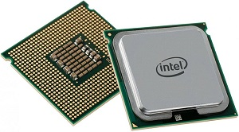
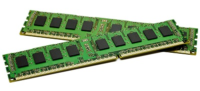
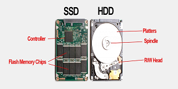
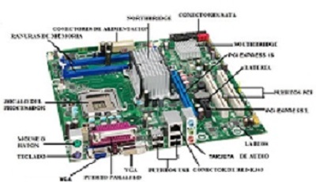
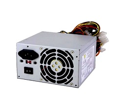

HADWARE
Parte Física del computador
EL HADWARE
1. Introducción
El término hardware proviene del inglés (hard = duro, ware = cosa o
mercancía). En informática, se refiere a todas las partes físicas y
tangibles de un sistema computacional. Si puedes tocarlo, es hardware.
-
Analogía: Si una computadora fuera un cuerpo humano, el hardware
serían los huesos, los órganos y los músculos, mientras que el
software sería el pensamiento y la personalidad.
2. Clasificación por su Importancia
No todo el hardware tiene la misma relevancia. Se divide en dos grupos:
-
Hardware Crítico (Básico): Son las piezas sin las cuales la computadora
simplemente no enciende (Procesador, Memoria RAM, Placa Base y Fuente de Poder).
-
Hardware Periférico (Complementario): Son los extras que añaden funciones
pero no son vitales (Impresora, Cámara Web, Escáner).
3. Los "Órganos" Internos (Componentes Clave)
Para que una máquina funcione, necesita estos componentes dentro de su chasis:
1.CPU (Procesador): El "cerebro". Realiza millones de cálculos por segundo.

2.Memoria RAM: El "escritorio de trabajo". Guarda lo que estás usando
ahora mismo para que el PC sea rápido. Si se apaga, se borra.

3.Almacenamiento (SSD o HDD): El "archivo". Donde se guardan
tus fotos, juegos y el sistema operativo de forma permanente.

4.Placa Madre: El "sistema nervioso". Es el tablero donde se
conectan todos los demás componentes para comunicarse entre sí.

5.Fuente de Alimentación: El "corazón". Envía energía eléctrica
precisa a cada parte para que no se quemen.

4. Los Periféricos (Entrada y Salida)
Es la forma en que nosotros interactuamos con la máquina:
-
De Entrada: Meten información al sistema (Teclado, Mouse, Micrófono).
-
De Salida: Nos muestran el resultado del proceso (Monitor, Impresora, Altavoces).
-
De Almacenamiento/Mixtos: Guardan y sacan datos (Memorias USB, Discos externos).
5. Evolución y Futuro
El hardware ha pasado de ocupar habitaciones enteras (con tubos de vacío) a caber
en la palma de nuestra mano (smartphones) gracias a la microelectrónica.
-
Tendencia: Cada vez es más pequeño, consume menos energía y es más potente.
-
El futuro: Se habla de hardware cuántico y procesadores orgánicos que imitan
aún más el cerebro humano.
6. Conclusión
Sin el hardware, el software no tendría donde ejecutarse. Es la base material que
permite que hoy tengamos internet, videojuegos y herramientas de trabajo. La
potencia de una computadora no depende de lo "bonita" que sea por fuera, sino de
la calidad de su hardware interno.